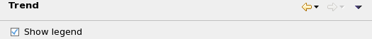

Trend preference settings
The Trend preference page lets you set display options for trend graphs.

There is one setting:
Show legend: If this option is checked, a legend is displayed beside the chart.
Functional changes
- Introduced in SmarTest 7.2.0